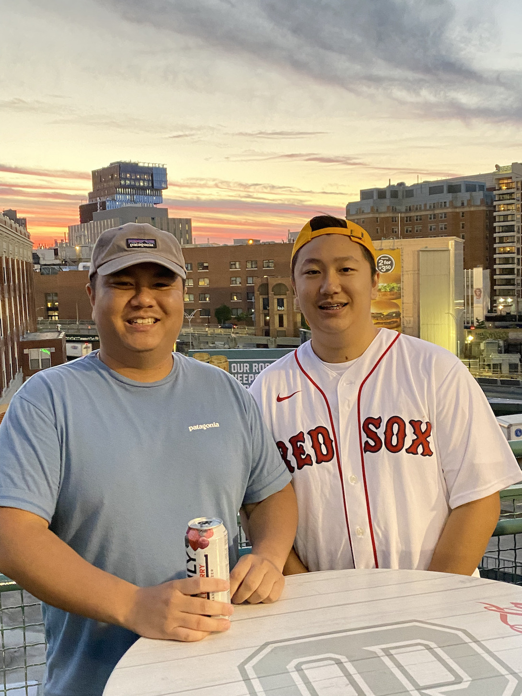
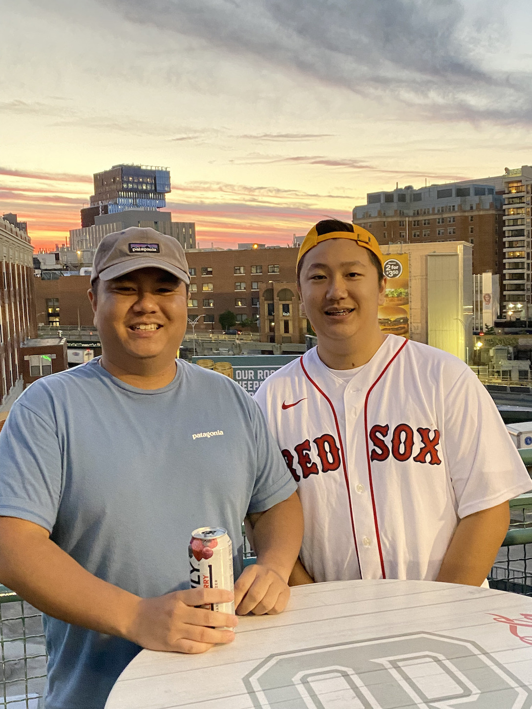
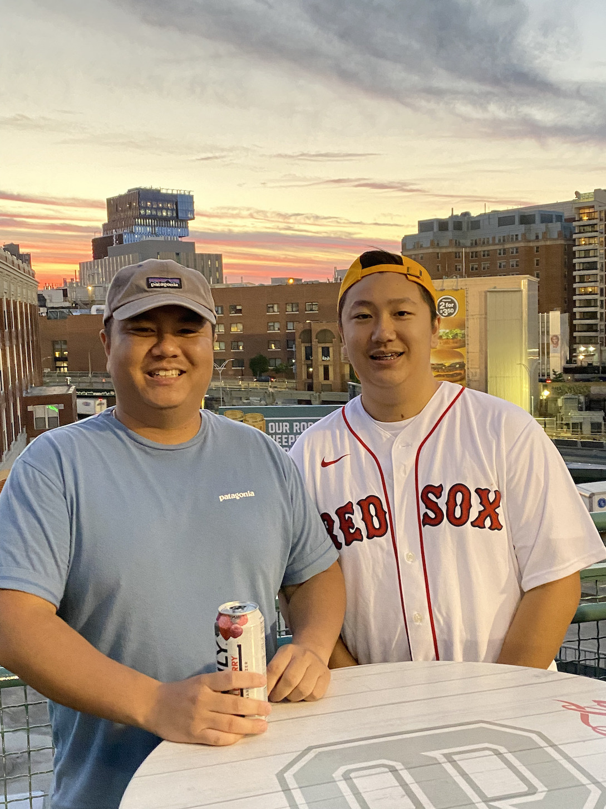
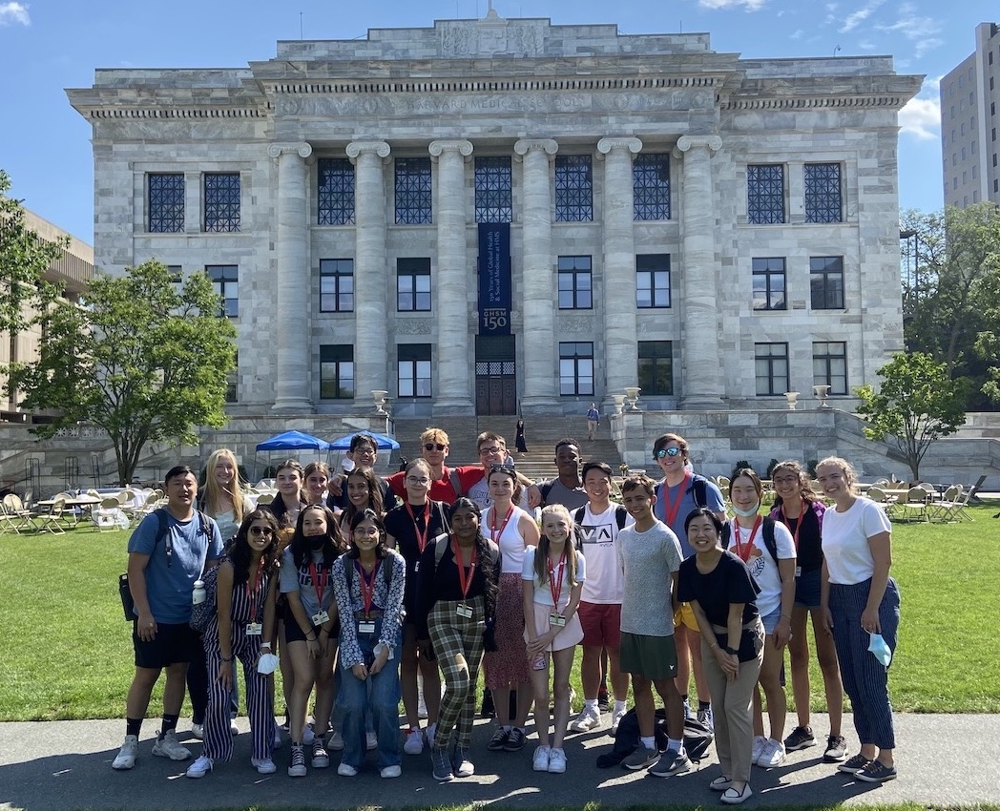
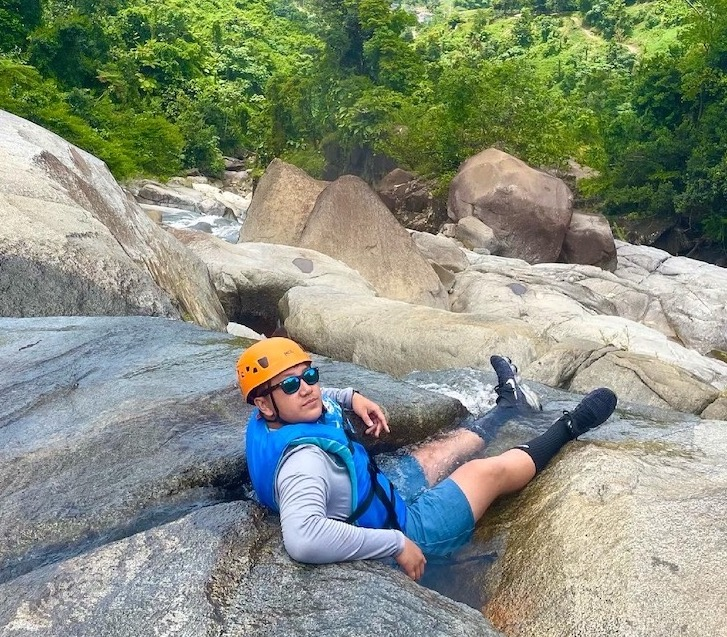
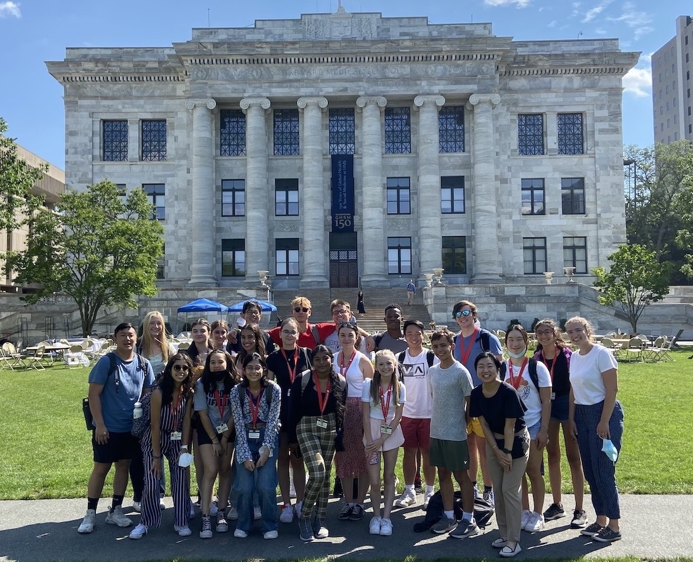
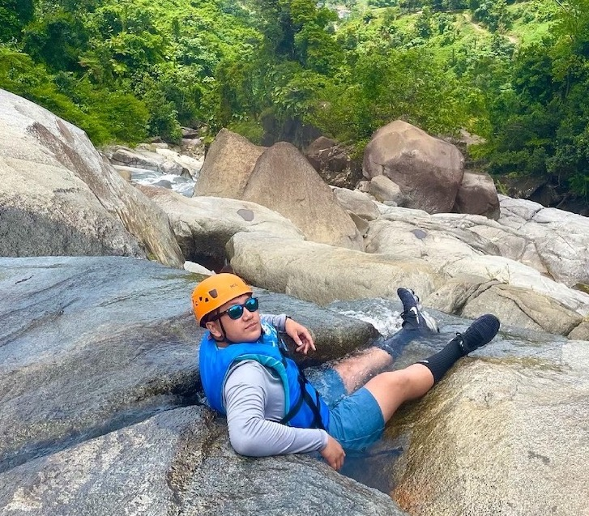

Hello, my name is Travis Tran, and I am currently a junior at the Massachusetts Academy of Math and Science at WPI (MAMS). Before MAMS, my sending school was the Advanced Math and Science Academy (AMSA), a charter school located in Marlboro. I have lived in Marlboro my entire life with my brother, my mom, my dad, and my husky, Kirby. I was born here in MA, but both of my parents are Vietnamese and immigrated here due to the Vietnam War. That has always been one of the reasons why I strive to achieve and maintain high academic standards for myself. Hearing the stories of my father working three jobs and going to college at the same time while being alone in a foreign country motivates me to make him proud. I consider myself to be a hard-working, perseverant, easy-going, and curious scholar. These qualities have led me to seek a higher education experience at MAMS and later on at university.

Outside of traditional school, I enjoy hanging out with my friends,
going to the gym, playing video games, skiing/snowboarding, playing
with my dog, and following the Boston sports teams. I am a huge
Patriots and Celtics fan and enjoy going to games. I follow the NFL
and NBA a lot and do fantasy leagues with my friends.
In
the summer of 2022, I spent two weeks taking a bioinformatics course
at Harvard
University. I slept in the dorms there and had an incredible
experience meeting and learning with people from around the world. In
the future, I hope to do another program like this, or maybe an
internship, to continue to learn new things, meet new people, and come
across new experiences. Similar to the reasons I spent two weeks at
Harvard, I enjoy traveling the world and I am extremely grateful that
I am able to with my family. I enjoy going to other places and
experiencing new cultures, new adventures, new people, and the great
things that this world has to offer.
  
 
I have also done a lot of community service through clubs at AMSA and
have received awards for doing so. I really enjoy giving back to the
community and it gives me a feeling that nothing else can. One
Thanksgiving, I made a Turkey in the morning for a food shelter and
the smiles on the people’s faces were amazing to see. This enjoyment
of community service prompted me to apply and qualify for AMSA’s
National Honor Society (NHS)
chapter. Here at MAMS, I have participated in STEM Saturdays where I
help to teach STEM topics to elementary and middle school students in
the Worcester area. In addition, I have taught lessons on reflection
angles using mirrors to elementary and middle school students at
Tatnuck Magnet School and the Nativity School of Worcester during
MAMS's community service day.
At AMSA, I also
participated in student government and math team, earning multiple
rewards in that regard. During my time on the AMSA math team, I was
elected captain as a sophomore and qualified for the Junior
Mathematical Olympiad (JMO).
I was also AMSA’s leading scorer both years I was a part of the high
school team, competing in the Worcester County Mathematics League (WOCOMAL). As a member of student
government, I helped to organize school-wide events like homecoming
and communicated the student body’s needs to the administration. All
in all, I was an active and engaged part of the community. Here at
MAMS, I am a part of its math team, programming team, logic club,
creative engineering club, and computer aided design (CAD) club.